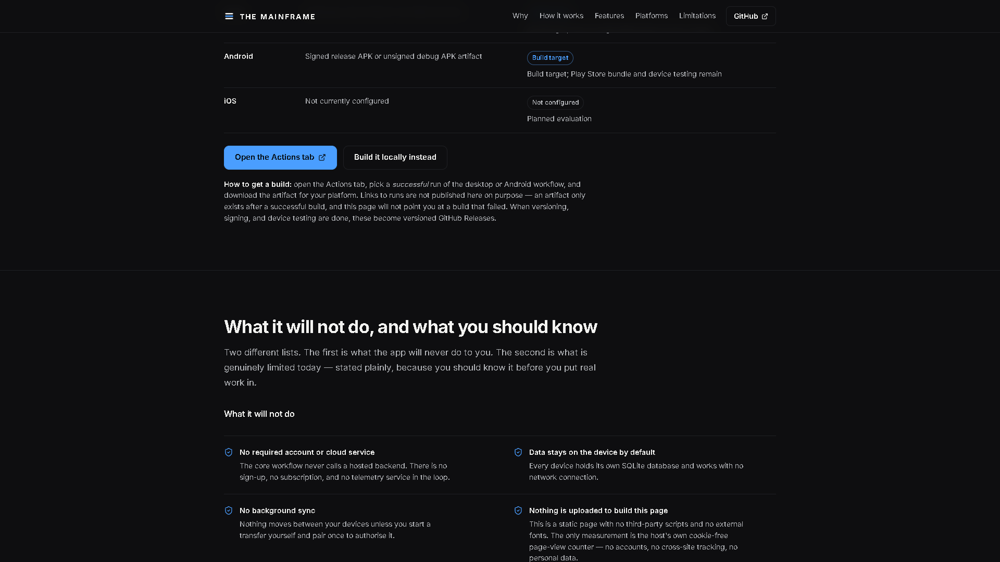
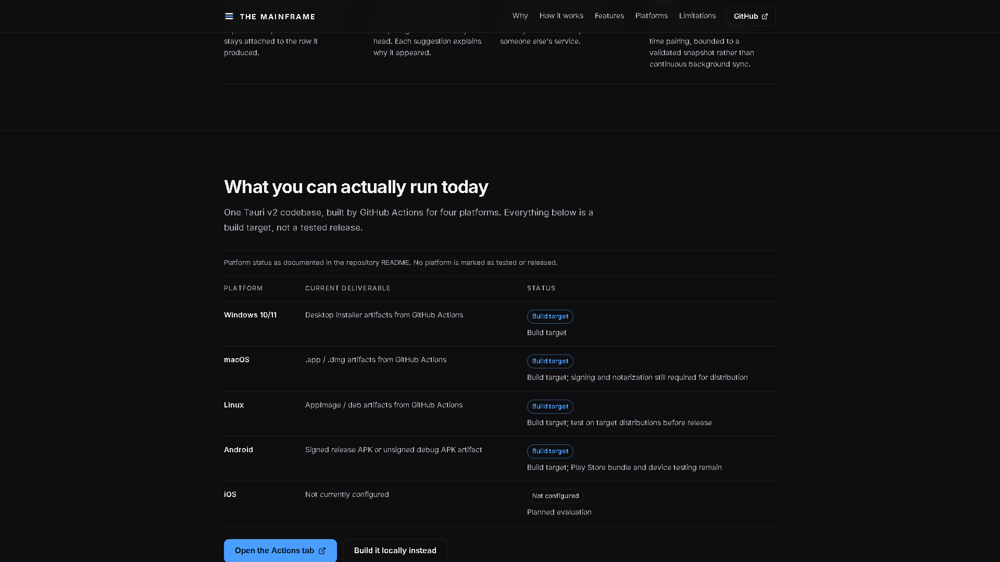
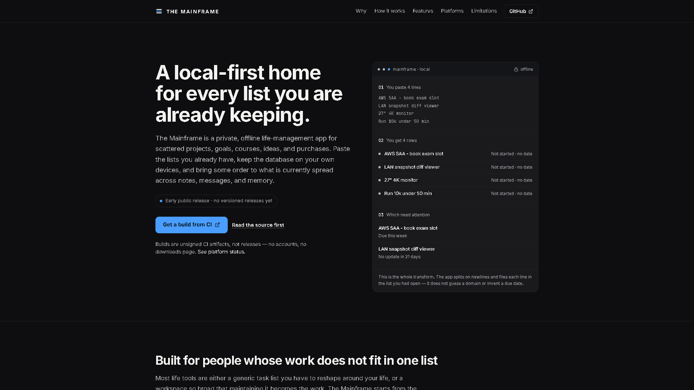
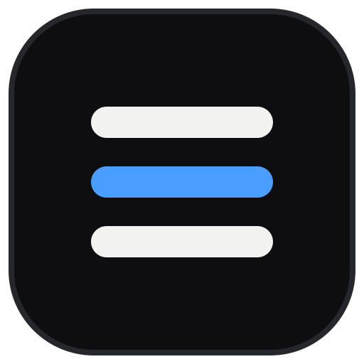

most
landing
pages
oversell.
This one has a section called

on the marketing page.
Four things it does.
And nothing else.


the closing section is titled
Read the code
before you trust it.

The Mainframe
the-mainframe-app.vercel.app
Early public release · no versioned releases yet